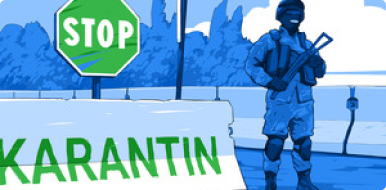

Коронавирус COVID-19
в Узбекистане
Инфицированы
2753
Выздоровели
2245
Умерли
12
-
Мирзиёев рассказал, зачем было построено Сардобинское водохранилище
05:28 / 16.05.2020 -

Карантин в Узбекистане продлен до 1 июня
05:28 / 16.05.2020 -

Обмелевшая Сардоба: стихия или человеческий фактор?
05:28 / 16.05.2020 -

Следствие проверяет четыре версии прорыва Сардобинской плотины
05:28 / 16.05.2020 -

Выявлено еще 7 случаев коронавируса
05:28 / 16.05.2020 -

Итоги второго месяца карантина
05:28 / 16.05.2020
Последние новости
-

По факту прорыва Сардобинского водохранилища возбуждено уголовное дело
После прорыва дамбы Сардобинского водохранилища возбуждено уголовное дело, сообщили в пресс-службе Генпрокуратуры Узбекистана.
-

Мирзиёев: «Нам следовало бы принять некоторые правила карантина как часть повседневной жизни»
Президент Узбекистана заявил, что после того, как угроза коронавируса исчезнет, в стране следовало бы принять некоторые правила периода карантина как часть своей повседневной жизни.
-

В Ташкенте планируют ввести новую систему электронных проездных билетов
Целью этих изменений является максимально возможное сокращение количества других маршрутов на улицах, где проходят основные маршруты.
-
По факту прорыва Сардобинского водохранилища возбуждено уголовное дело
После прорыва дамбы Сардобинского водохранилища возбуждено уголовное дело, сообщили в пресс-службе Генпрокуратуры Узбекистана.
-
Мирзиёев: «Нам следовало бы принять некоторые правила карантина как часть повседневной жизни»
Президент Узбекистана заявил, что после того, как угроза коронавируса исчезнет, в стране следовало бы принять некоторые правила периода карантина как часть своей повседневной жизни.
-
В Ташкенте планируют ввести новую систему электронных проездных билетов
Целью этих изменений является максимально возможное сокращение количества других маршрутов на улицах, где проходят основные маршруты.
Cамые популярные новости
По факту прорыва Сардобинского водохранилища
возбуждено уголовное дело
По факту прорыва Сардобинского водохранилища
возбуждено уголовное дело
По факту прорыва Сардобинского водохранилища
возбуждено уголовное дело
По факту прорыва Сардобинского водохранилища
возбуждено уголовное дело